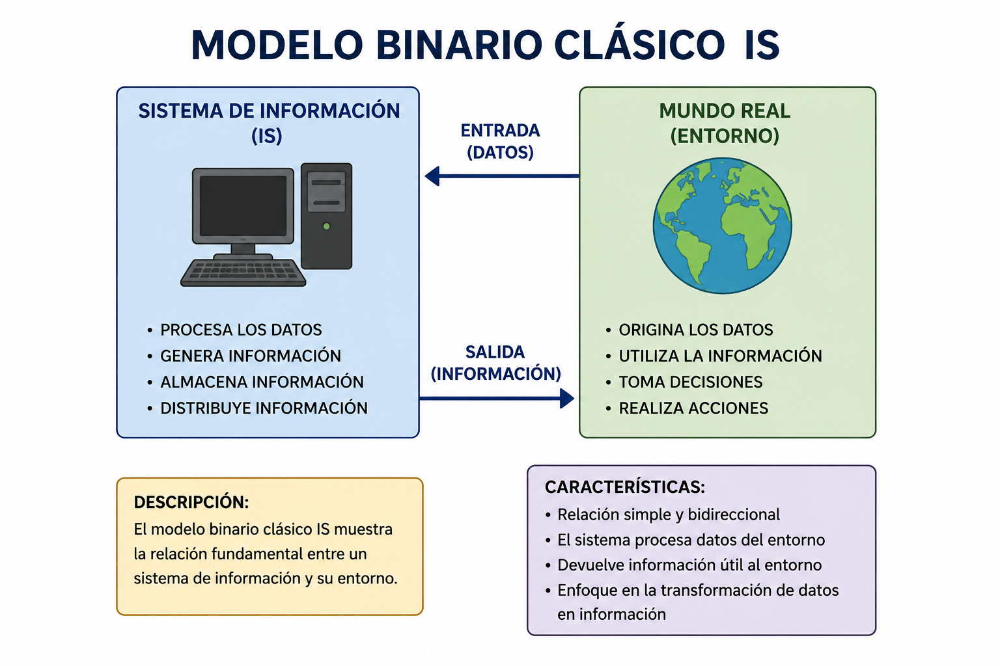
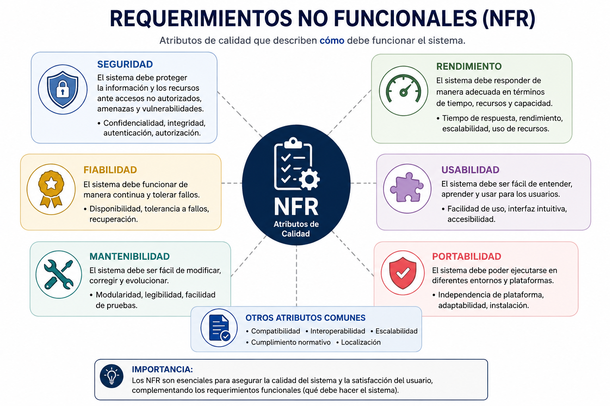
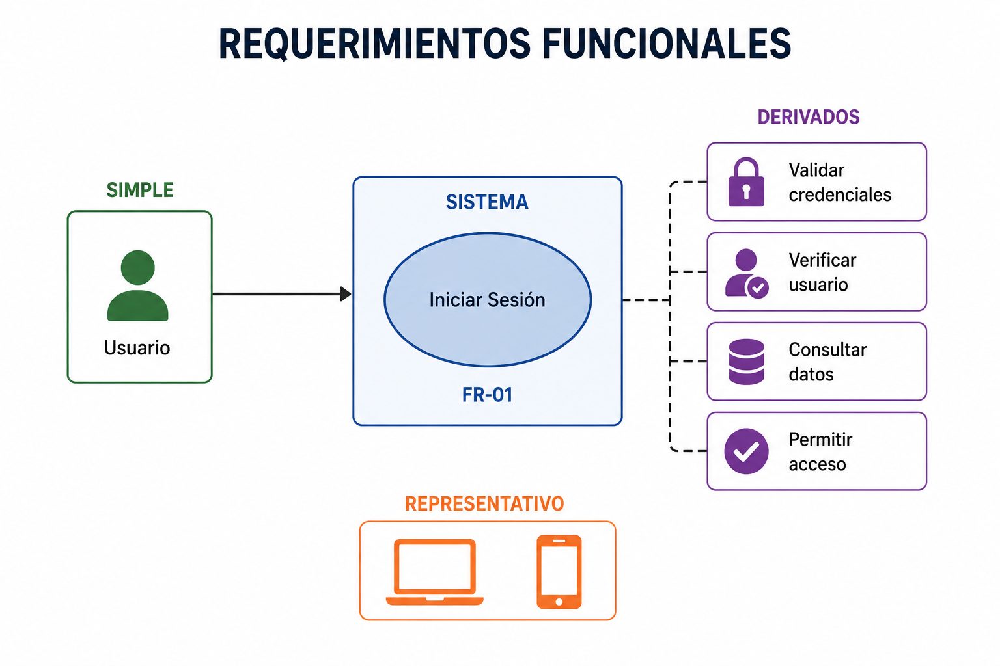

3. DESARROLLO
3.1 Para empezar: ¿Por qué deberíamos hablar de requerimientos funcionales?
Cualquier proyecto de software se sostiene sobre lo que el sistema promete hacer. Los requerimientos son la base de todo proyecto de software, ya que describen las funcionalidades
y características que el software debe tener para satisfacer las necesidades de los usuarios o
clientes (Celi-Párraga et al., 2023, p. 3). Si esa base se construye con descuido, todo lo demás
—arquitectura, diseño, código, pruebas— se erige sobre arena. Por eso la Ingeniería de Requerimientos dedica buena parte de su atención a clasificar, definir y comunicar lo que el sistema
debe lograr.
Antes de avanzar conviene tener un mapa. La forma más extendida de organizar los requerimientos en el campo es la tipología dual: con frecuencia se mencionan dos grandes tipos de
requerimientos, funcionales y no funcionales, aunque conviene tener cuidado con estas definiciones, puesto que no es raro encontrar que exista una relación entre ambas más cercana de lo que
se espera (Contreras Bernal & Hernández Ruiz, 2022, p. 93). Esta advertencia no es menor: el
campo carece de una definición precisa y consensuada de la distinción funcional/no funcional,
y hay autores que incluso rechazan esa distinción, mientras que la mayor parte de la literatura la
trata como un dato sin definirla con rigor (Meyer et al., 2019, §2, p. 2). La tensión teórica de
fondo es real, y aprender a navegarla forma parte del oficio.
(Figura: Vista general de los requerimientos funcionales)
3.2 Una definición construida con muchas voces
3.2.1 La frase central de Sommerville
La definición canónica que casi todos los autores latinoamericanos recogen viene de Sommerville: «los requerimientos funcionales para un sistema refieren lo que el sistema debe hacer»
(Sommerville, 2011, §4.1.1, p. 85). Esta brevedad esconde una formulación más extensa que
conviene tener a mano:
«son enunciados acerca de servicios que el sistema debe proveer, de cómo debería reaccionar el sistema a entradas particulares y de cómo debería comportarse el sistema en situaciones específicas; en algunos casos, los requerimientos funcionales también explican lo que no debe hacer el sistema» (Sommerville, 2011, §4.1, p. 84).
Lo prohibido —lo que el sistema no debe hacer— es el detalle que muchas veces se pasa por
alto, y que resulta crítico en sistemas críticos: pensemos en un sistema bancario que jamás debe
permitir un saldo negativo no autorizado, o en un sistema médico que jamás debe administrar
medicamentos sin doble verificación.
3.2.2 La misma idea, en español ecuatoriano
Celi-Párraga et al. (2023) reproducen casi palabra por palabra la formulación de Sommerville, lo que confirma que se trata de una definición consensuada en la tradición hispanoamericana. La frase-resumen que ofrecen es exactamente la misma: «los requerimientos funcionales
para un sistema refieren lo que el sistema debe hacer» (Celi-Párraga et al., 2023, §3.3, p. 39).
3.2.3 La mirada industrial de Laplante
Laplante (2017) aporta una formulación más industrial, pero igualmente compacta: «los functional requirements (FRs) describen los servicios que el sistema debe proveer y cómo el sistema
reaccionará ante sus entradas» (Laplante, 2017, Cap. 1, p. 6)1.
Y, con el mismo énfasis que Sommerville, añade que «los requerimientos funcionales necesitan establecer explícitamente ciertos
comportamientos que el sistema no debe ejecutar» (Laplante, 2017, Cap. 1, p. 6)2.
3.2.4 La voz normativa de SWEBOK
Bourque y Fairley (2014), como guía de cuerpo de conocimiento mantenida por la IEEE,
ofrecen la formulación más concisa y normativa: los requerimientos funcionales «describen las
funciones que el software debe ejecutar —por ejemplo, formatear un texto o modular una señal—; a veces se les conoce como capabilities o features» (Bourque & Fairley, 2014, Software Requirements KA, §1.3, p. 1-3). En otras palabras, lo que define a un FR según SWEBOK es la acción concreta que el software debe realizar, sin importar el dominio.
La verdadera novedad operativa que SWEBOK aporta no es la frase
descriptiva, sino el criterio de identificación: un requerimiento funcional puede describirse como
«aquel para el cual puede escribirse un conjunto finito de pasos de prueba que validen su comportamiento» (Bourque & Fairley, 2014, Software Requirements KA, §1.3, p. 1-3). Dicho de otro modo, la verificabilidad se vuelve el sello distintivo: si no puede probarse, no es un requerimiento funcional bien
planteado.
(Figura: SWEBOK)
A esto se suma una propiedad más general: «una propiedad esencial de todos los requerimientos de software es que sean verificables como característica individual en el caso de un
requerimiento funcional, o a nivel del sistema en el caso de un requerimiento no funcional»
(Bourque & Fairley, 2014, Software Requirements KA, §1.1, p. 1-2).
3.2.5 La definición compacta de Wiegers & Beatty
Wiegers y Beatty (2013) ofrecen la formulación más breve y precisa de toda la literatura: «un requerimiento funcional es una descripción de un comportamiento que un sistema exhibirá bajo condiciones específicas» (Wiegers & Beatty, 2013, Tabla 1-1, p. 7). En doce palabras se cristalizan
tres ideas: (i) se describe un comportamiento, no una función estática; (ii) ese comportamiento
es exhibido —es decir, externamente observable— y por tanto verificable; (iii) bajo condiciones
específicas, no en general.
La versión ampliada añade un matiz fundamental:
«Los requerimientos funcionales especifican los comportamientos que el producto exhibirá bajo condiciones específicas, describiendo lo que los desarrolladores deben implementar para que los usuarios puedan cumplir sus tareas (requerimientos del usuario), satisfaciendo así los requerimientos del negocio; esta alineación entre los tres niveles de requerimientos es esencial para el éxito del proyecto.» (Wiegers & Beatty, 2013, p. 9).
3.2.6 El enfoque pragmático de Robertson & Robertson
Robertson y Robertson (2012) insisten en el aspecto pragmático: «en esencia, un requerimiento funcional es algo que el producto debe hacer para soportar el negocio de su propietario»
(Robertson & Robertson, 2012, Cap. 1, Truth 10, p. 8)3
. La definición canónica de apertura del
Capítulo 10 es más operativa: «los requerimientos funcionales especifican lo que el producto debe
hacer: las acciones que debe realizar para satisfacer las razones fundamentales de su existencia»
(Robertson & Robertson, 2012, Cap. 10, p. 223). En síntesis, para Robertson y Robertson todo FR se justifica en última instancia por su valor para el negocio que encarga el producto.
3.2.7 La voz colombiana en TIA
Una formulación reciente, accesible y muy citable proviene del artículo de Contreras Bernal y Hernández Ruiz (2022), que define los requerimientos funcionales como:
«Aquellos que describen con detalle lo que el sistema debe hacer, es decir, su comportamiento a partir de indicaciones sobre cuáles son las excepciones, entradas y salidas del mismo; por lo anterior, dependen mucho del tipo de software, de los usuarios, así como de lo específico y particular que pueda ser el negocio de la organización.» (Contreras Bernal & Hernández Ruiz, 2022, p. 93)4.
3.2.8 El caso atípico de Pressman
Pressman (2002) no proporciona una definición autocontenida del término. La formulación
más cercana surge de su esquema de identificación:
«F = requisito funcional, D = requisito de datos, C = requisito de comportamiento, Z = requisito de interfaz, y S = requisito de salida; un requisito identificado como F09 indica que se trata de un requisito funcional y que tiene asignado el número 9 dentro de los citados requisitos» (Pressman, 2002, §10.5.6, p. 175).
La definición operativa de Pressman se construye más bien por contraste con la calidad: «la
calidad del software se define como concordancia con los requisitos funcionales y de rendimiento
explícitamente establecidos, con los estándares de desarrollo explícitamente documentados, y
con las características implícitas que se espera de todo software desarrollado profesionalmente»
(Pressman, 2002, Cap. 8, p. 135).
3.3 ¿De qué depende un requerimiento funcional?
Hasta aquí tenemos siete formulaciones distintas pero compatibles. Lo importante es notar
que ningún requerimiento funcional vive en el vacío. Como señala Sommerville (2011): «los requerimientos funcionales dependen del tipo de software que se esté desarrollando, de los usuarios
esperados del software y del enfoque general que adopta la organización cuando se escriben
los requerimientos» (Sommerville, 2011, §4.1.1, p. 85). Esta misma formulación se reproduce
literalmente en la obra ecuatoriana (Celi-Párraga et al. 2023, §3.3, p. 39), y se reafirma en el
artículo colombiano que añade la dependencia respecto a lo específico y particular del negocio
de la organización (Contreras Bernal & Hernández Ruiz, 2022, p. 93)5. En síntesis, lo que cuenta como buen FR cambia según el contexto del proyecto.
Tres factores, entonces, condicionan lo que vamos a redactar: el dominio técnico, el perfil de
usuario y la cultura organizacional. Un FR de un sistema embebido aeronáutico no se parece
—ni puede parecerse— al de una aplicación de mensajería para adolescentes.
3.4 ¿En qué nivel se escribe un requerimiento funcional?
3.4.1 El modelo binario clásico: usuario y sistema
La estratificación más extendida en la literatura es la binaria. Sommerville (2011) la formula así:
«Al expresarse como requerimientos del usuario, los requerimientos funcionales se describen por lo general de forma abstracta que entiendan los usuarios del sistema; sin embargo, requerimientos funcionales más específicos del sistema detallan las funciones del sistema, sus entradas y salidas, sus excepciones, etcétera.» (Sommerville, 2011, §4.1.1, p. 85).
En otras palabras, el mismo FR puede existir en dos versiones: una que el usuario comprende y otra que el desarrollador implementa. La misma distinción se
reproduce en Celi-Párraga et al.(2023) (Celi-Párraga et al. 2023, §3.3, p. 39).
Para fijar la diferencia, conviene una formulación más amplia de Celi-Párraga:
«los requerimientos del usuario son enunciados, en un lenguaje natural junto con diagramas, acerca de qué servicios esperan los usuarios del sistema, y de las restricciones con las cuales éste debe operar; los requerimientos del sistema son descripciones más detalladas de las funciones, los servicios y las restricciones operacionales del sistema de software» (Celi-Párraga et al. 2023, §3.2, pp. 37–38)6.
Dicho de otro modo, el lado «humano» se escribe para que se entienda; el lado «técnico», para que se verifique.
Hay un rango interno, además: «los requerimientos funcionales del sistema varían desde requerimientos generales que cubren lo que tiene que hacer el sistema, hasta requerimientos muy
específicos que reflejan maneras locales de trabajar o los sistemas existentes de una organización»
(Sommerville, 2011, §4.1.1, p. 85). Laplante (2017) reproduce esta estratificación clásica: «los requerimientos funcionales pueden ser de alto nivel y generales —en cuyo caso son requerimientos
del usuario— o pueden ser detallados, expresando entradas, salidas, excepciones, etcétera —en
cuyo caso son requerimientos del sistema» (Laplante, 2017, Cap. 1, p. 6)7. En síntesis, lo que cambia entre un nivel y el otro es el grado de precisión, no la naturaleza del requerimiento.

(Figura: Ejemplo del modelo binario.)
3.4.2 El modelo de tres niveles de Wiegers
Wiegers y Beatty (2013) introducen una distinción más sofisticada que se ha vuelto referencia
industrial: «los requerimientos del software incluyen tres niveles distintos: requerimientos de
negocio, requerimientos del usuario y requerimientos funcionales; adicionalmente, todo sistema
tiene una colección de requerimientos no funcionales» (Wiegers & Beatty, 2013, p. 7). «Una feature
consiste en una o más capacidades del sistema lógicamente relacionadas que proveen valor a
un usuario y son descritas por un conjunto de requerimientos funcionales» (Wiegers & Beatty,
2013, p. 7).
La distinción de perspectiva resulta elegante: «los requerimientos del usuario describen la
vista del usuario; los requerimientos funcionales describen la vista del desarrollador» (Wiegers
& Beatty, 2013, p. 89)8. Es decir, los dos últimos niveles hablan desde la mirada de quien diseña el sistema, no de quien lo usa.
3.4.3 La jerarquía Volere de cinco niveles
Robertson y Robertson (2012) llevan la estratificación al extremo metodológico con la metodología Volere: trabajan
con una jerarquía no subjetiva de cinco niveles —contexto de trabajo, evento de negocio, caso
de uso de producto, paso del caso de uso de producto, y requerimiento atómico—. Los requerimientos funcionales bien redactados son requerimientos atómicos: «ayuda a pensar en los
requerimientos atómicos como el nivel más bajo de especificación de requerimientos» (Robertson
& Robertson, 2012, Cap. 10, p. 238)9. La idea de fondo es descender hasta una frase por requerimiento, verificable de manera aislada.
3.5 La frontera con los no funcionales
3.5.1 ¿Qué son los requerimientos no funcionales?
Para entender bien qué es un FR conviene mirar de frente a su contraparte. Celi-Párraga
et al.(2023) la describen así:
«los requerimientos no funcionales son limitaciones sobre servicios o funciones que ofrece el sistema; incluyen restricciones tanto de temporización y del proceso de desarrollo, como impuestas por los estándares; los requerimientos no funcionales se suelen aplicar al sistema como un todo, más que a características o a servicios individuales del sistema» (Celi-Párraga et al. 2023, §3.3, p. 40).
Adicionalmente, «los requerimientos no funcionales, como indica
su nombre, son requerimientos que no se relacionan directamente con los servicios específicos
que el sistema entrega a sus usuarios» (Celi-Párraga et al./em>, 2023, §3.3, p. 41)10
.
Los NFR a su vez se subdividen en tres grandes categorías: del producto (usabilidad, eficiencia, dependibilidad, seguridad), organizacionales (entorno, organizacionales, desarrollo) y
externos (regulatorios, éticos, legislativos) (Celi-Párraga et al. 2023, §3.3, p. 41)11. En otras palabras, los NFR abarcan desde la calidad del producto hasta las normas externas que el software debe respetar.
3.5.2 Una frontera difusa
La distinción no es nítida. Como advierte Sommerville (2011): «si los requerimientos no funcionales se expresan por separado de los requerimientos funcionales, las relaciones entre ambos
serían difíciles de entender» (Sommerville, 2011, Cap. 4, p. 90)12.
3.5.3 Los NFR como atributos sobre los FR
Bourque y Fairley (2014) establecen la relación estructural más clara que ofrece la literatura:
«los requerimientos de calidad del software son en realidad atributos de (o restricciones sobre) los requerimientos funcionales (lo que el sistema hace); este KA busca claridad usando software quality en el sentido más amplio y usando los requerimientos de calidad del software como restricciones sobre los requerimientos funcionales» (Bourque & Fairley, 2014, Software Quality KA, p. 10-1).
Y de manera complementaria: «los requerimientos no funcionales son aquellos que actúan para restringir la solución; a veces se les conoce como constraints o quality requirements; pueden
clasificarse adicionalmente en requerimientos de rendimiento, mantenibilidad, seguridad (safety), confiabilidad, seguridad (security), interoperabilidad u otros» (Bourque & Fairley, 2014,
Software Requirements KA, §1.3, p. 1-3).
Una idea para llevarse a casa: el FR es el contenedor («qué hace el sistema»); el NFR es el
calificativo («qué tan bien lo hace»). No son hermanos paralelos, sino padre e hijo conceptuales.
3.5.4 Cuando los NFR generan FR derivados
Un NFR puede derivar en uno o varios FR concretos. Los NFR pueden asociarse a los
requerimientos funcionales, por ejemplo: «solo usuarios autorizados deberían poder acceder a la
funcionalidad X del sistema» (Laplante, 2017, p. 10)13. Wiegers y Beatty (2013) dan el ejemplo
paradigmático: «los requerimientos de seguridad para autenticación de usuarios dan lugar a
requerimientos funcionales derivados que podrían implementarse a través de funcionalidad de
contraseñas o biometría» (Wiegers & Beatty, 2013, p. 290)14. En otras palabras, los NFR no desplazan a los FR: los obligan.

(Figura: NFR.)
3.6 ¿Cuántos tipos de requerimientos hay?
3.6.1 La taxonomía de tres tipos de Laplante
Laplante (2017) amplía la dicotomía clásica con una tercera categoría: «otra taxonomía para
las especificaciones de requerimientos se enfoca en el tipo de requerimiento de la siguiente lista
de posibilidades: requerimientos funcionales (FRs), requerimientos no funcionales (NFRs) y
requerimientos de dominio» (Laplante, 2017, Cap. 1, p. 6)15. «Los requerimientos de dominio son
derivados del dominio de aplicación; estos tipos de requerimientos pueden consistir en nuevos
requerimientos funcionales o restricciones a requerimientos funcionales existentes, o pueden
especificar cómo deben realizarse cómputos particulares» (Laplante, 2017, p. 11)16. La idea es que ciertas restricciones vienen del área de conocimiento y no del cliente.
3.6.2 La taxonomía de cinco tipos de Pressman
Pressman (2002), en cambio, propone una taxonomía con más categorías: «el tipo de requisito
toma alguno de los siguientes valores: F = requisito funcional, D = requisito de datos, C = requisito de comportamiento, Z = requisito de interfaz, y S = requisito de salida» (Pressman,
2002, §10.5.6, p. 175).
3.7 De la teoría al papel: cómo se redacta un requerimiento funcional
Aquí entra la parte práctica del tutorial. Tener clara la definición es necesario pero insuficiente: hay que saber escribirla.
3.7.1 Lenguaje natural según el nivel
Celi-Párraga et al.(2023) marcan el principio rector:
«los requerimientos del usuario para un sistema deben describir los requerimientos funcionales y no funcionales, de forma que sean comprensibles para los usuarios del sistema que no cuentan con un conocimiento técnico detallado; el documento de requerimientos no debe incluir detalles de la arquitectura o el diseño del sistema; en consecuencia, si se escriben los requerimientos del usuario, no se debe usar jerga de software, anotaciones estructuradas o formales; deben escribirse los requerimientos del usuario en lenguaje natural, con tablas y formas sencillas, así como diagramas intuitivos» (Celi-Párraga et al. 2023, §3.5, p. 44)17.
En otras palabras, el documento debe poder leerlo alguien que no es desarrollador.
A nivel del sistema cambian las herramientas:
«los requerimientos del usuario se escriben casi siempre en lenguaje natural, complementado con diagramas y tablas adecuados en el documento de requerimientos; los requerimientos del sistema se escriben también en lenguaje natural, pero de igual modo se utilizan otras notaciones basadas en formas, modelos gráficos del sistema o modelos matemáticos del sistema» (Celi-Párraga et al. 2023, §3.5, p. 44)18.
En síntesis, el lenguaje natural no se abandona al pasar al nivel del sistema: se complementa con notaciones formales que vuelvan verificable cada detalle.
(Figura: Lenguaje natural.)
3.7.2 Los cinco lineamientos de Sommerville
Para minimizar la interpretación errónea al escribir los requerimientos en lenguaje natural,
Sommerville (2011) recomienda (Sommerville, 2011, p. 96)19: (i) formato estándar uniforme para
todos los requerimientos —un requerimiento, una oración— asociado con su razón y fuente;
(ii) distinguir obligatorio de deseable mediante verbos consistentes («debe» vs. «debería»);
(iii) resaltar las partes clave con negrilla, cursiva o color; (iv) evitar la jerga técnica; (v) asociar
una razón a cada requerimiento de usuario para facilitar el cambio futuro. En otras palabras, Sommerville pide uniformidad, obligatoriedad explícita y justificación siempre visible.
3.7.3 La plantilla estructurada de siete campos
Cuando el lenguaje natural se queda corto, Sommerville (2011) ofrece una plantilla con siete
campos: «cuando se use una forma estándar para especificar requerimientos funcionales, se debe
incluir la siguiente información» (Sommerville, 2011, §4.3.2, p. 98): (1) función o entidad —descripción de qué se especifica; (2) entradas y procedencias; (3) salidas y destinos; (4) requiere
—datos u otras entidades del sistema necesarios para el cálculo; (5) acción —qué se va a hacer;
(6) precondición y postcondición; (7) efectos colaterales. En síntesis, la plantilla obliga a pensar en entradas, salidas y condiciones antes de redactar la acción.
3.7.4 Las reglas estrictas de Robertson & Robertson
Robertson y Robertson (2012) llevan la disciplina de redacción al extremo. El nivel de detalle
de sus ejemplos es revelador: «los requerimientos están escritos como una única oración con un
único verbo; cuando se escribe esta única oración, se hace el requerimiento mucho más fácil de
probar y mucho menos susceptible a la ambigüedad» (Robertson & Robertson, 2012, Cap. 10,
p. 228). La forma canónica es «The product shall...»: «hace la oración activa y se enfoca en
comunicar lo que el producto pretende hacer» (Robertson & Robertson, 2012, p. 228).
Hay un anti-patrón frecuente:
«A veces las personas usan una mezcla de «shall», «must», «will», «might», «could», etc., para indicar la prioridad de un requerimiento; esta práctica resulta en confusión semántica y se aconseja contra ella; en su lugar, debe usarse una forma consistente para escribir las descripciones de los requerimientos —«The product shall...» es la más común— y usar un atributo separado del requerimiento para identificar su prioridad.» (Robertson & Robertson, 2012, p. 228).
3.7.5 La estructura Description + Rationale
Una de las contribuciones más originales de Robertson y Robertson (2012) al campo es exigir
que cada requerimiento lleve una explicación de por qué existe. Se sugiere —fuertemente— que
«se añada un rationale a los requerimientos para mostrar por qué existe el requerimiento; en
algunos casos puede ser obvio, pero en muchas circunstancias es un componente crucial del
requerimiento» (Robertson & Robertson, 2012, p. 229).
Un ejemplo concreto: Description: «The product shall record roads that have been treated.»
Rationale: «To be able to schedule untreated roads and highlight potential danger.» (Robertson
& Robertson, 2012, pp. 229–230).
¿Por qué importa el rationale?
«Al incluir un rationale con la descripción, el requerimiento mismo se vuelve más útil; al saber por qué algo está ahí, los desarrolladores y los testers saben mucho más sobre el esfuerzo que deben dedicarle; también indica a los mantenedores futuros por qué existe el requerimiento en primer lugar» (Robertson & Robertson, 2012, p. 230)20.
Y como bono: «el rationale también ayuda a superar la posibilidad de escribir inadvertidamente
una solución en lugar de la necesidad real» (Robertson & Robertson, 2012, p. 230)21. En síntesis, un rationale explícito protege el requerimiento contra reinterpretaciones y olvidos.
3.7.6 El estándar IEEE 29148 según Laplante
Laplante (2017) aporta una regla operativa que ningún otro autor enuncia con tanta precisión: «los requerimientos funcionales deben capturar todas las entradas del sistema y la secuencia
exacta de operaciones y respuestas (salidas) ante situaciones normales y anormales para cada
posibilidad de entrada» (Laplante, 2017, Cap. 4, p. 98)22. Adicionalmente, «los requerimientos
funcionales pueden usar descripción caso-por-caso u otras formas generales de descripción» (Laplante, 2017, p. 98)23
.
IEEE 29148 «provee un número de opciones organizacionales para los requerimientos funcionales; los requerimientos funcionales pueden organizarse por: modo del sistema, clase de usuario,
objeto, característica, estímulo, jerarquía funcional» (Laplante, 2017, p. 99)24. «Una combinación
de estas técnicas puede usarse en un mismo documento SRS» (Laplante, 2017, p. 99). En otras palabras, el estándar no prescribe una estructura única, sino varias formas equivalentes de organizar los FR.
3.7.7 Cómo identificar y etiquetar un FR
La identificación trazable es central. Pressman (2002) propone que «un requisito identificado
como F09 indica que se trata de un requisito funcional y que tiene asignado el número 9 dentro
de los citados requisitos» (Pressman, 2002, §10.5.6, p. 175).
Wiegers y Beatty (2013) ofrecen una convención más rica: «el enfoque más simple da a cada
requerimiento un número de secuencia único, como UC-9 o FR-26; el prefijo indica el tipo de
requerimiento, como FR para requerimiento funcional» (Wiegers & Beatty, 2013, p. 187)26. Y
para cuando el FR es jerárquico:
«una buena convención es escribir el requerimiento padre para que parezca un título, encabezado o nombre de feature, en lugar de parecerse a un requerimiento funcional en sí mismo; los requerimientos hijos de ese padre, en agregado, entregan la capacidad descrita en el padre» (Wiegers & Beatty, 2013, p. 188)27.
En síntesis, el identificador debe ser legible por sí solo: la convención FR-26 indica tipo y orden a la vez.
3.7.8 ¿Cómo se ve un FR bien escrito?
¿Cómo saber si un FR está bien escrito? Wiegers y Beatty (2013) enumeran los atributos
individuales de un FR excelente (Wiegers & Beatty, 2013, Cap. 11, pp. 204–205)28: completitud
(Complete), corrección (Correct), factibilidad (Feasible), necesidad (Necessary), priorización
(Prioritized), no ambigüedad (Unambiguous) y verificabilidad (Verifiable). En otras palabras, un buen FR debe estar completo, ser correcto, posible, necesario, priorizado, sin ambigüedades y, sobre todo, verificable. Y los atributos del
conjunto de FRs (Wiegers & Beatty, 2013, p. 206)29: completitud (no faltan FRs), consistencia
(no se contradicen entre sí), modificabilidad (se pueden modificar manteniendo histórico) y
trazabilidad (bidireccional). En síntesis, no basta con que cada FR sea bueno de forma aislada: el conjunto también debe sostenerse como sistema.
3.8 Trazabilidad: cuando un FR es un nodo de una red
Un requerimiento funcional no es un átomo aislado: vive enredado en una red de orígenes y
consecuencias. Documentar esa red es la trazabilidad.
3.8.1 Rastreo del FR hacia sus orígenes y entregables
Un FR, una vez escrito, debe poder rastrearse en dos direcciones: hacia sus orígenes y hacia sus consecuencias. Como sintetizan Wiegers y Beatty (2013):
«los requerimientos de seguridad para autenticación de usuarios dan lugar a requerimientos funcionales derivados que podrían implementarse a través de funcionalidad de contraseñas o biometría; en esos casos, se pueden rastrear los requerimientos funcionales correspondientes hacia atrás a su requerimiento no funcional padre y hacia adelante a los entregables aguas abajo como de costumbre» (Wiegers & Beatty, 2013, Cap. 29, p. 497)30.
Es decir, la trazabilidad de un FR recorre dos flechas: una va hacia la fuente que lo motivó (un NFR, una regla de negocio o un caso de uso), y la otra va hacia los entregables que lo materializan (diseño, código, pruebas). Mantener ambas flechas vivas durante todo el ciclo de vida es la única manera de responder con certeza preguntas como «¿por qué existe este requerimiento?» o «¿qué se rompe si lo cambio?».
Cuando llega la hora de gestionar el conjunto de FR de un proyecto, Laplante (2017) retoma
las preguntas de Andriole (Laplante, 2017, Cap. 9, p. 223)31: «(a) ¿cuáles son las cosas específicas
que el sistema debe hacer para satisfacer los requerimientos propositivos? (b) ¿cómo deberían
ser priorizados? (c) ¿cuáles son los riesgos de implementación?». Es una lista mínima útil para
revisión técnica.

(Figura: Funcionalidades derivadas ejemplo.)